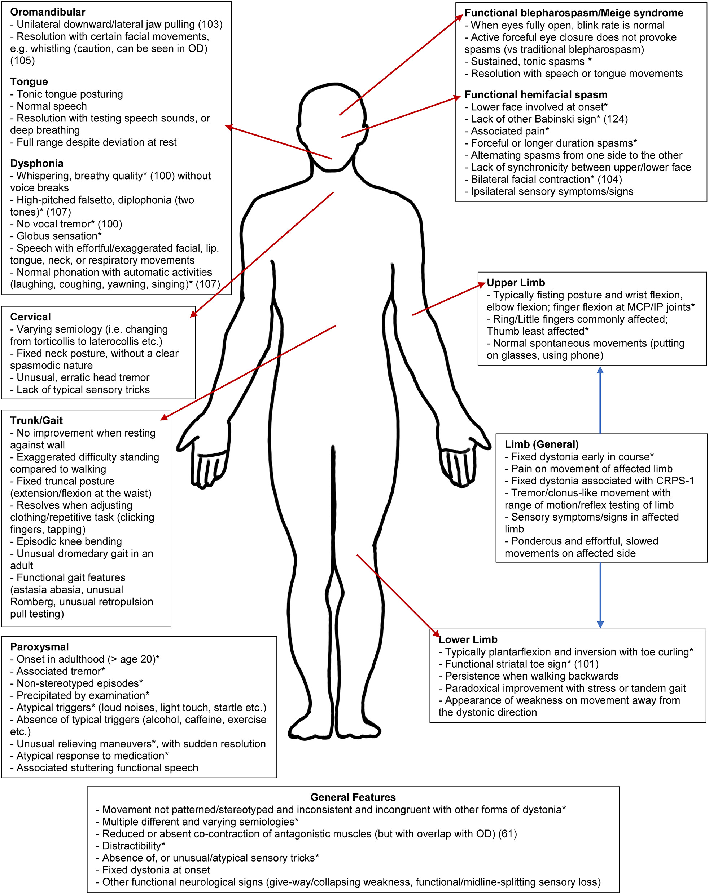

Diagnostik & Symptome
Positive klinische Zeichen
| Hoover Zeichen | |||
| test11 | test12 | ||
| Link 5 | test13 | test14 | test15 |
| Link 6 | test16 | test17 | test18 |
| Link 6 | test19 | test20 | test21 |
mFND
seizureFND
Symptome


Das Hoover-Zeichen ist ein diagnostischer Test zur Unterscheidung zwischen einer Schwäche etwa durch eine Querschnittslähmung und funktioneller Schwäche der Beine. Es basiert auf der physiologischen Reaktion, dass bei der Anhebung eines Beins das andere Bein automatisch nach unten drückt. Dies wird durch den gekreuzten Streckreflex (crossed extensor reflex) ermöglicht, bei dem die Kontraktion der Muskeln eines Beins die antagonistische Kontraktion im anderen Bein auslöst.
Test der Hüftbeugung (med.: flexion):
Anweisung: Der Pat. wird gebeten, das Schwache Bein anzuheben
Beobachtung: Während der Patient versucht, das rechte Bein anzuheben, legt der
Arzt
seine Hand unter die Ferse des linken Beins. Der Arzt beobachtet, ob das linke Bein
automatisch nach unten drückt.
Ergebnis: Normale Funktion oder organische Hemiparese: Wenn das linke Bein
automatisch
nach unten drückt, spürt der Arzt den Druck auf seiner Hand. Dies zeigt, dass die
Muskeln
normal funktionieren oder dass eine organische Hemiparese vorliegt. Funktionelle
Schwäche:
Wenn kein Druck zu spüren ist, deutet dies auf eine funktionelle Schwäche hin.
Test der Hüftstreckung (med.: extension):
Anweisung: Der Pat. wird gebe, dass gesunde/bessere Bein gegen Widerstand zu
beugen.
Beobachtung: Während der Patient das linke Bein gegen Widerstand beugt, legt der
Arzt
seine Hand unter die Ferse des schwachen Beins. Der Arzt beobachtet, ob das schwache
Bein
automatisch nach unten drückt.
Ergebnis: Wenn der Arzt einen Druck auf seiner Hand spürt, der vorher nicht da
war,
deutet dies auf eine inkonsequente Muskelaktivität hin, was auf eine funktionelle
Schwäche
hindeutet. Fehlt dieser Druck, könnte dies auf eine anderweitige Schwäche hindeuten
(z.B.
Querschnittslähmung)
"The great beauty of Hoover's sign is that it relies on the absence of a normal
phenomenon
found in most people and not the presence of an abnormal phenomenon such as the Babinski
sign."
(Das Schöne am Hoover-Zeichen ist, dass es auf dem Fehlen eines normalen Phänomens
beruht, das bei den meisten Menschen auftritt, und nicht auf dem Vorhandensein eines
anormalen Phänomens wie beim Babinski-Zeichen.)
Was ist eine Dystonie?
Funktionelle Dystonie (FD) ist eine Bewegungsstörung, bei der es zu unkontrollierten
Muskelkontraktionen kommt, die zu verdrehten Bewegungen und abnormen Körperhaltungen führen, oft
begleitet von Schmerzen

Geschlecht, Alter und Häufigkeit:
FD ist bei Frauen häufiger als bei Männern. Das
durchschnittliche Erkrankungsalter ist zwischen 29 und 50 Jahren. Kinder sind deutlich weniger
betroffen (2-5/100.000; bei Kindern aber auch deutlich weniger Studien). Hier liegt das
durchschnittliche Erkrankungsalter bei 11-14 Jahren.
Organische Dystonie (OD) versus Funktionelle Dystonie (FD):
| Organische Dystonie | Funktionelle Dystonie | |
| Ursache | Meist durch genetische oder neurologische Probleme. | Keine erkennbare körperliche Ursache. Softwear statt Hardwear Problem |
| Symptome | Entwickeln sich langsam und sind konstant. | Treten plötzlich auf und können stark variieren. |
| Behandlung | Medikamente und Physiotherapie helfen oft. | Fokus auf Physiotherapie, psychologische Unterstützung und Techniken zur Stressbewältigung. |
Biopsychosoziales Modell (übertragbar auf FMD allgemein):
| Biologisch | Psychisch | Psychosozial | |
| Prädisposition |
|
|
|
| Auslösend |
|
|
|
| Erhaltend |
|
|
|